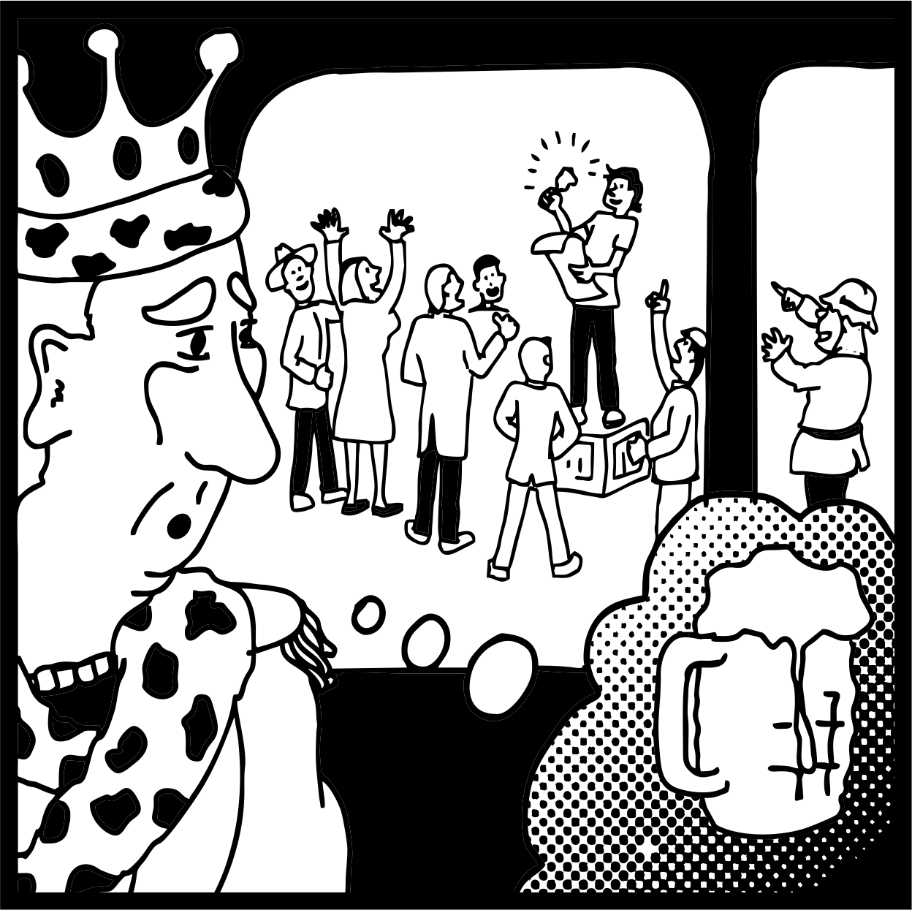

The programmer king

A recurring Dark Star error is to remove a gate and then crown the builder who removed it.
The protocol becomes permissionless, but the useful interface still requires the founder's server. Identity becomes sovereign, but the naming layer is owned. The mechanism is decentralized, but an admin key restores the king.
Build the bell so the bell does not need its maker.
The builder can still provide valuable services. What changes is the claim that continued dependence on the builder is the product.